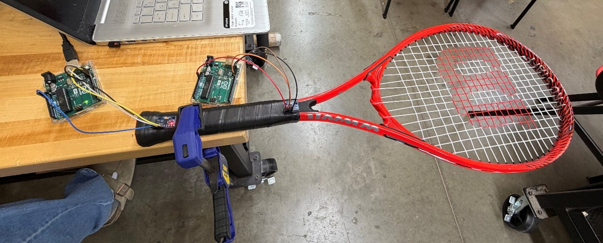
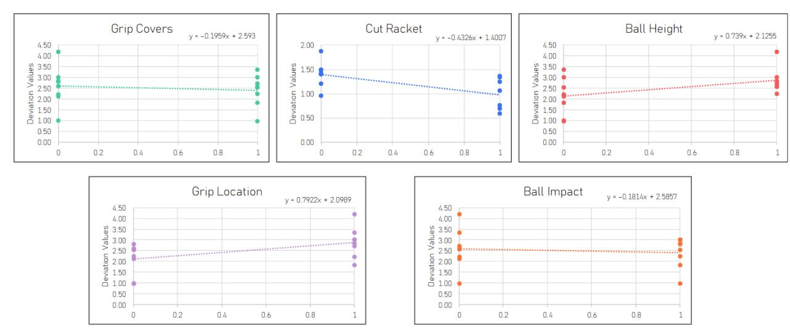

Selected work · 02
Motion / Jerk Analysis
- Summary
- Created an experimental design to analyze analyze kinematic jerk in tennis rackets during swing impact, optimizing for grip techniques and strike placement to reduce physical strain on players.
- Role
- Co-Lead Engineer; Architected data acquisition pipeline and performed kinematic data analysis.
- Challenges
- Engineeered a custom data acquisition pipeline using an Arduino Uno, MS Excel, and MPU6050 accelerometers. Programmed C++ script to collect and convert data into terms of g and remove data clipping, then sent to Excel via Data Streamer. Overcame hardware placement constraints by optimizing sensor placement at movement peaks and soldering connections to accelerometers to improve data. Designed a Design of Experiments (DOE) to systematically collect and evaluate results across 16 total experiments.
- Results
- Processed data into multi-axis significance graphs. This determined two high-impact changes, one conventional and one not. First, the lower grip decreased the deviation of jerk by about 30%, and, second, the unconventional change was cutting some of the strings of the racket, which decreased the deviation of jerk by around 33%.
Project visuals


